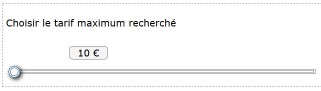

Description

Le slider est un composant qui permet de faire varier une valeur en déplaçant un curseur. Il peut être vertical ou horizontal.
Il est possible également de proposer des sliders à intervalle pour déterminer une valeur entre un minimum et un maximum à l'aide de deux curseurs.
Restitution
Interactions de base au clavier
Les interactions au clavier sont :
- Les flèches haut ou droite permettent d'augmenter la valeur.
- Les flèches bas ou gauche permettent de diminuer la valeur.
Motif de conception : Slider (WAI-ARIA Authoring Practices 1.1)
Test du slider avec JAWS
Étape 1
- Utiliser la touche Tabulation pour positionner le curseur sur le potentiomètre.
JAWS annonce : « potentiomètre horizontal, choisir le tarif maximum recherché, 0€ ».
Note : si votre réglage par défaut n'est pas sur l'activation automatique du mode formulaire, appuyer sur Entrée pour rentrer dans ce mode.
Étape 2
- Augmenter la valeur avec les flèches haut ou droite.
- Diminuer la valeur avec les flèches bas ou gauche.
- JAWS annonce la valeur mise à jour.
Note : il se peut lorsqu'on utilise les flèches haut et bas que la nouvelle valeur ne soit pas annoncée.
Test du slider avec NVDA
Étape 1
-
Utiliser la touche Tabulation pour positionner le curseur sur le potentiomètre.
NVDA annonce « choisir le tarif maximum recherché potentiomètre »
Étape 2
Note : même si votre réglage par défaut est l'activation automatique du mode formulaire, il semble que ce mode ne s'active pas lorsque le curseur arrive sur le slider. Appuyer sur NVDA + Entrée pour activer ce mode. Il se peut que NVDA reste silencieux lorsque vous entrez dans ce mode.
- Utiliser la combinaison de touches Majuscule + Tabulation pour revenir en arrière, puis Tabulation pour repositionner le focus sur le potentiomètre.
NVDA annonce : « choisir le tarif maximum recherché 10€ ».
Étape 3
- Augmenter la valeur avec les flèches haut ou droite.
- Diminuer la valeur avec les flèches bas ou gauche.
NVDA annonce « x euros », où x est la valeur sélectionnée.
Test du slider avec VoiceOver
Étape 1
Utiliser la touche Tabulation pour positionner le curseur sur le potentiomètre.
VoiceOver annonce « [x euros] choisir le tarif maximum recherché, circulaire curseur. Vous êtes actuellement sur circulaire curseur. Pour commencer l'interaction avec ce curseur de défilement, appuyez sur Ctrl-Option-Majuscule-Flèche vers le bas ».
Étape 2
Utiliser les touches VO + Majuscule + flèche bas pour interagir avec le potentiomètre.
VoiceOver annonce « Entrée circulaire curseur ».
Étape 3
Note : veiller à ce que la navigation rapide soit désactivée en appuyant simultanément sur les flèches droite et gauche.
- Augmenter la valeur avec les flèches haut ou droite.
- Diminuer la valeur avec les flèches bas ou gauche.
VoiceOver annonce deux fois la valeur sélectionnée.